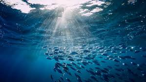
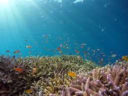
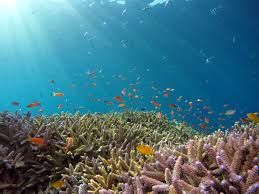

 

https://www.undp.org/papp/sustainable-development-goals/below-water diakses pada tanggal 25 November 2025 pukul 18.21
https://unstats.un.org/sdgs/report/2024/Goal-14/?utm_ diakses pada tanggal 25 November 2025 pukul 19.00
https://www.fao.org/sustainable-development-goals-data-portal/data/indicators/1441-fish-stocks-sustainability/?utm_ diakses pada tanggal 25 November 2025 pukul 19.20
https://www.msc.org/what-we-are-doing/science-and-research/six-takeaways-state-of-worlds-fisheries?utm_ diakses pada tanggal 25 November 2025 pukul 19.31
https://en.antaranews.com/news/357229/indonesia-china-foster-collaboration-in-marine-hr-development?utm_ diakses pada tanggal 25 November 2025 pukul 20.03
https://www.coraltriangleinitiative.org/news/coral-triangle-nations-unite-combat-marine-crisis-set-bold-2025-conservation-goals?utm_ diakses pada tanggal 25 November 2025 pukul 21.15
https://www.antaranews.com/berita/5108489/kkp-dorong-pendanaan-berkelanjutan-untuk-kawasan-segitiga-karang?utm_ diakses pada tanggal 25 November 2025 pukul 21.30
https://www.un.org/bbnjagreement/en diakses pada tanggal 26 November 2025 pukul 16.03
https://unstats.un.org/sdgs/report/2024/Goal-14/?utm_ diakses pada tanggal 25 November 2025 pukul 19.00